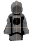
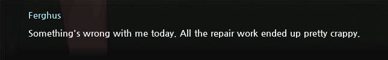

Mabinogi is a Massively Multiplayer Online Role-Playing Game (MMORPG for short), originally developed in 2004 by Nexon Korea. Released to the U.S in 2008. Unlike other MMOs, Mabinogi emphasizes player freedom by not including a traditional RPG class system. Players are free to spec their ability points (AP) into any skills they would like, a warrior that can cast magic, who works as a chef outside of adventuring? That's fine! To the extreme end, this means a player can hypothetically max spec every skill to be a jack of all trades and a master of all! The game's tagline, fantasy life does a good job of thematically explaining this. Life is a recurring concept throughout the game, most notably in its mechanics. This is for two reasons, the most obvious is that there are a lot of life-based skills, you can be a carpenter, a chef, a blacksmith, an apothecary, etc. The second reason is because of the rebirth system. This can get a little complicated to explain, so bear with me. For every real week that passes, you can rebirth your character. Rebirthing allows you to change your characters appearance and sets your level back to 0 while keeping all your skills and inventory items intact. In Mabinogi, you have 2 levels, the first being the level of your current life which has a cap of 200, and the second being your cumulative level which is every level gained throughout all your lives. You can probably see where this is going, it's a neat way to tie the fact that you can specialize in every skill by justifying that you have lived multiple lives! This went over my head when I played the game way back when, but I really appreciate how clever this is now!
The first thing you want to do in an MMO is group up, you wont get far adventuring alone. Needing help with the first dungeon, Alby Dungeon, I found a small band of newbs looking for a warrior. Their leader was a mage named Panda. Panda was the fearless ambitious type, she would be the first one to charge headfirst at the biggest enemy she could find and somehow manage to come out alive! I guess she was more of a battle mage XD. For the next year, our band of newbs would do just about everything together!
One day, me and Panda were travelling to Dunby, the first major town in the game. We were on the outskirts by the wheat fields when we stopped dead in our tracks! There was a cow stuck inside of a building! Easily amused by this, we decided to sit there and just watch it for a good hour, we even named the cow Mr Moo Moo. Whenever we hung out, Panda often strategized what quests we should take on, what items the party needed, etc. This time however, Panda had something bigger in mind. This was Panda's magnum opus; she was going to expand our little band of misfits into a full-fledged guild! We already had enough founding members, the hard part was that Panda needed Gold and NC (Nexon Cash, the premium currency) For the next month or so, we would all grind for gold, while Panda sought out NC on her own.
After a group outing in one of the dungeons, Panda instructed us to follow her to an empty patch of land. She had announced that from this day forward we would all be guildmates and promptly placed our guild stone into the ground! We were all booming with excitement! One by one we all went to the guild stone to officially become members. That night we just camped out by the guild stone casually chatting and discussing what our guild robes should look like. We were no longer newbs, we were finally going to make a name for ourselves! And that we did, very quickly the guild grew, every day our chat was bustling with trading, and party requests. This may have been in part by the fact we formed at a very opportune time, Mabinogi had released it's first major expansion, Irinid. Irinid brought about an entire new continent to explore, two new playable races; Giants and Elves and tons of new group activities such as exploration and the guilds personal favorite, dragon boat racing! Teams would board a boat and try to survive a siege of enemies until they crossed the river. Its hard to forget, we must have spent days trying to get a perfect run. It really required a lot of teamwork, several members had to steer the boat while everyone else had to ensure we werent overwhelmed! There was an incentive to do well too, for a limited time teams that did exceptionally well got some really rare items, its how I got my most prized possession..
About a year later, the next big expansion came out, alchemy. Alchemy brought about a new dungeon system dubbed shadow missions, and an alchemist class that could use crystals collected from shadow missions to cast powerful spells. It was around this time that Panda started to emphasize the idea of the guild being a kingdom, she created a hierarchy of ranks, installing one of our most dedicated members as king with her as the queen. I was dubbed an officer and was responsible for moderating and overlooking various guild activities. This was really the golden age of the guild; we were big enough to have multiple groups going about at once but still small enough for everyone to know each other. Typically, my time was spent directly with Panda and King as we quested and organized events.
Eventually the guild started to grow a little too fast, there was a lot of pressure on Panda and King to expand as much as they could, even going as far as creating branches in other games! We werent just a group of friends now; we were an organization! Hosting events and managing the hierarchy of membership took precedent, it was overwhelming to say the least. Moderating and keeping the peace with people you casually talk with is fun, vetting new members and attending large scale events in an official capacity is work haha! I decided to take a break from Mabi, maybe wait for things to calm down. I must have been gone for roughly 3 months when I returned, things were still bustling but practically all our founding members save for Panda and King were gone. By this point I had kind of moved on, a game can only capture my attention for so long, so I placed my guild robe gently into my item bank and silently left the world of Mabinogi.
Whenever I think about my time in the guild. I feel nostalgic and inspired. Spending time with Panda, King, and those I met in the guild are some of my best online experiences! We had some great times together, I really felt I was apart of a community! If by some chance any of you manage to find this, I want to say thanks for all the memories x3! I hope you are all well!
While on my adventures, I met a variety of people outside of the guild, though only one stood out. He was mysterious and would often appear when I needed him most, he was always looking out for me, kind of like a big brother. I called him Nop and he always wore this pure white muffler (one of the most sought out robes at the time) paired with a colored headband. I would go to Nop if I ever needed help with a dungeon or had some question about an item or quest. He was the strong silent type, while Panda would talk with a variety of advance emotes such as X_X ^_^ (>w<) and (^///^) , Nop would use the occasional lol. I was somewhere in the middle using XD 0_0 :3 and :0. Nop was a really great guy, I hope wherever he is, he is well!
During the early years of Mabi, there were two special transformations players could get, paladins (Pally) and dark knights (DK). Via story quests everyone could become a paladin, once you were a paladin however, you had a choice, you could stay on the path of righteousness or submit to evil temptations. Naturally, I chose the path of darkness, do you see the DK armor??! Can you blame me at how cool it looked :D? Back then there was also an ongoing war between Pallys and DKs, if you were both transformed no matter where you were, you could PVP each other. This led to some fun moments, if I ever saw a pally in the wild, I would be all dramatic and challenge them to a duel, then I would unsheathe my dragon blade, and charge into glorious combat!


Before I even knew what the word microtransaction meant I was obsessed with getting pets in Mabinogi. Pets are purchasable AI companions which assist you in a variety of ways. Pets can range from simple animals (wolf, dog, cat, etc.) to more magical beasts such as dragons, imps, and sprites.
The most important pet is the mount! Mounts can do everything a normal pet can; but with the added bonus of significantly cutting down your travel time! Mabinogi is brutal if you don't have a mount; in the early days, moon gates (the fast travel system) did not work all day as they do now, they were only available for use at (in game) night! Not even to mention how much of a slog it is to walk through a multi floored dungeon!
When I was a newb, Panda always had to give me a ride with one of her two seated mounts (which are significantly slower than 1 person mounts) just so I could keep up! Eventually I was able to get a Nexon Cash card, but I was so excited that I kind of forgot about my mount problem >_<. and decided that my first pet would be a gray wolf!
A few cash cards later and I had obtained several mounts and other pets; That's enough... right? :(. Despite my desire for more fun pets, there was another more practical reason to keep buying new ones. BAG SPACE!! Each pet has its own inventory, that can vary in size. These can be accessed at any time simply by summoning the pet! Your inventory in Mabinogi is dreadfully small compared to the sheer number of things you will need to carry or loot at any given time; gold, potions, tools, crafting resources, event items, etc. There are also numerous quest related items that you are required to hold onto. Mabinogi is a HUGE game, and you can be on like 40 quests at once! At that point hoarding is necessary because it's extremely difficult to determine what you need now or might need later. I love Mabinogi, but at the end of the day it's exploitative, grindy and microtransaction heavy >:c. Modern Mabinogi seems to be slightly more generous by offering a couple of free mounts, a (small) dedicated quest inventory and carriable bags. Mind you, these bags also take up inventory space, so your inventory becomes an absolute mess!
As of May 26th 2022, gold bags have been removed from Mabinogi. On the bright side, gold no longer takes up inventory space!
You can't talk about Mabinogi and not talk about the infamous blacksmith... FERGHUS!
In Mabinogi, every piece of equipment has a durability and proficiency stat. If durability drops to 0, your equipment breaks and becomes useless. Simple enough, at that point why not just replace it? Well as you use a particular piece of equipment its proficiency stat will increase up to a maximum of 100%. Proficiency can be used towards upgrading equipment or even imbuing a weapon with a spirit (which is a whole other thing that has several upgrade trees). To keep your equipment in shape you will need to visit one of the game's many blacksmiths; the earliest one you encounter being Ferghus in the starting village of Tir Chonaill.
All blacksmiths have a gold rate per repair point alongside a % chance of a successful repair. Ferghus, being the earliest blacksmith, is the cheapest but also the least reliable. I think you can see where this is going. You know the term, critical failure right? Well Ferghus likes to hammer them out like there's no tomorrow! Not only will he fail to repair, he will also PERMANENTLY lower the equipment's TOTAL durability! Were you trying to upgrade that weapon? Well you might as well just find a replacement at this point! Back in the day, total durability was especially important if you were looking to imbune a weapon with a spirit as you could only repair them with a very expensive cash shop item. Modern Mabinogi is more forgiving allowing for spirit weapon repairs from any blacksmith at the price of gold. Still, I'm not trusting Ferghus with my Red Dragon Blade >:c!
There are two secret shops I am aware of in Mabinogi. There's Price the wandering trader and Fleta the tailor.
Price
Fleta
Price is likely the more well-known of the two as he is involved in the Pally and DK questlines. Price spawns randomly across the Uladh region of the map; to find him, you either had to get lucky or find out from someone else. Price doesn't exactly sell anything useful, he mostly just has a handful of generic and silly items such as balding head hat... I guess his popularity dervices more from the thrill of trying to find him XD. Though, modern Mabinogi has a built-in tracker now that displays his location at any given time.
Fleta on the otherhand sells a selection of clothes items, most notably, robes! Robes were always the most fun to collect since they came in so many different forms! I always thought the standard armor and clothing options were a little boring so I pretty much always wore a robe!
Fleta is somewhat easier to find as she only spawns on one portion of the map, the Sen Mag Prairie. Though, she only spawns there at specific times and tends to wander a bit. Unlike Price, Fleta is not involved in any major quests so it's easy to not know about her at all unless someone tells you. There is also one catch regarding Fleta's shop; the items she sells can ONLY be repaired by her, even now!
Originally, the North American version of Mabinogi had 4 servers. Each server was named after a character in the game:
Alexina
Mari
Ruairi
Tarlach
My server was Ruairi. I don't actually know much about the above characters except that Mari, Ruairi and Tarlach were a band of adventurers that kicked off some important event before the story of Mabinogi begins. Tarlach plays the most significant role I believe as he is involved in several quests.
Fun fact: Tarlach is a druid and takes the form of a bear, only reverting to his human form at night. This would always cause a delay in certain quests as you had to wait around to talk with him. Now, the game allows you to skip the wait by teleporting you into a private night instanse.
Like most MMO's of yesteryear; Mabinogi's player base has been steadily dwindling. To cut back on server costs, Nexon has conducted two major server merges. The first was done in 2019, merging Mari, Ruairi and Tarlach into the Nao Server. And more recently in 2022, Merging Nao and Alexina into the now sole renaming server, Erinn. Erinn being the world/planet Mabinogi takes place in.
Nao
You may have noticed that in some of the screenshots I added, my name ends with +Ruairi. During the merges, if you were lucky and someone else had the same exact name as you did, but in a different server, your username was automatically tagged with the server you originated from. I was one of the lucky ones I guess, since I don't see too many other users with these tags. It's a nice little remembrance of old times :)!
Sadly however, these merges indicate that Mabinogi's end is soon approaching; who knows how much longer the game will be around? Still, with the end over the horizon, I take comfort in the fact that I had this chance to revisit the game and document some of my treasured memories!